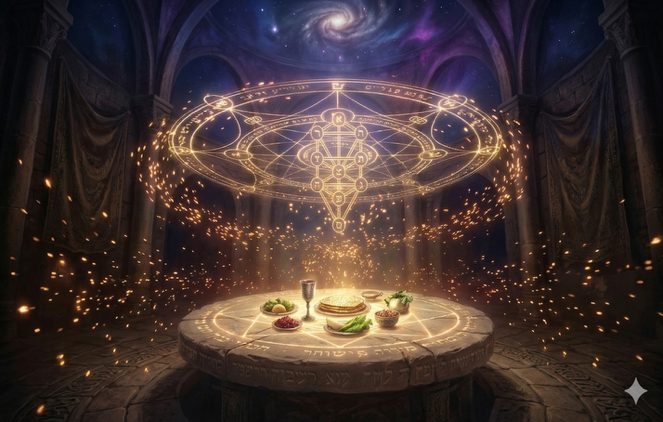
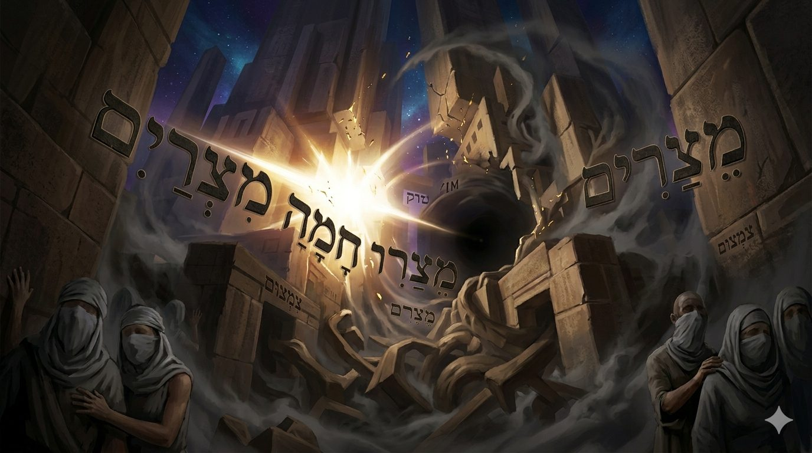
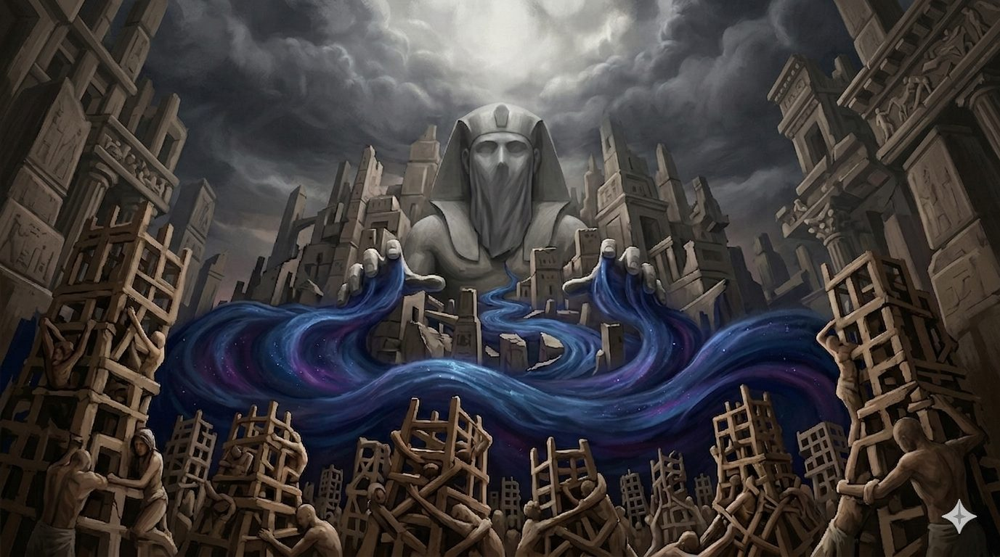
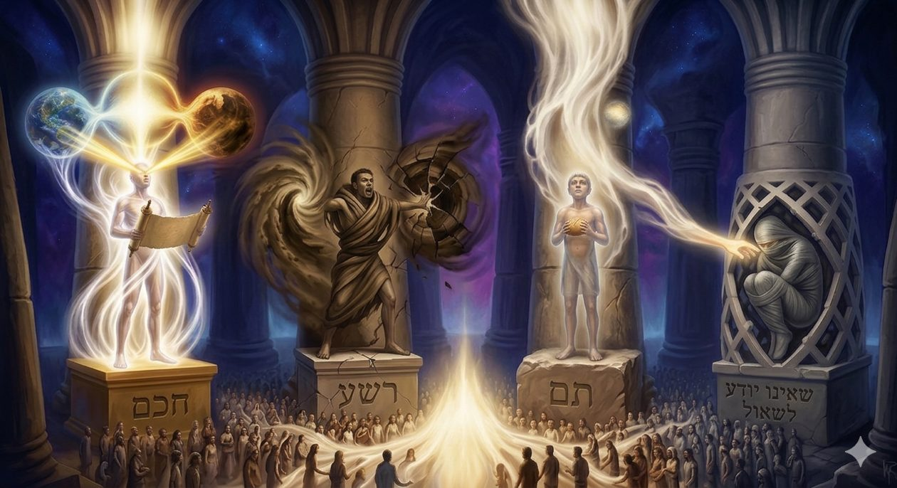
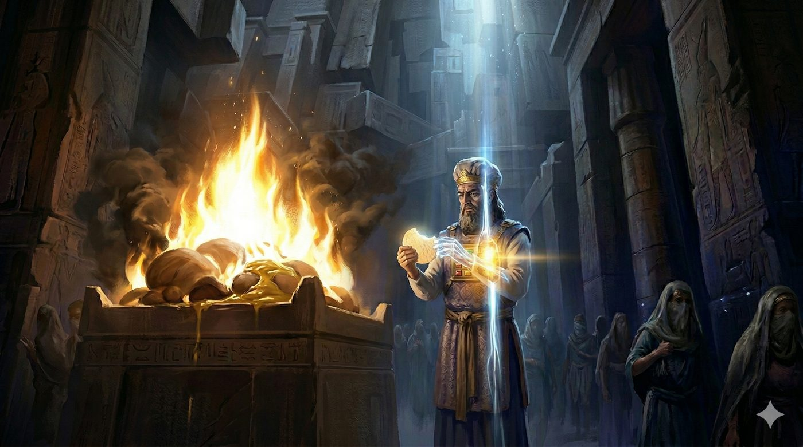
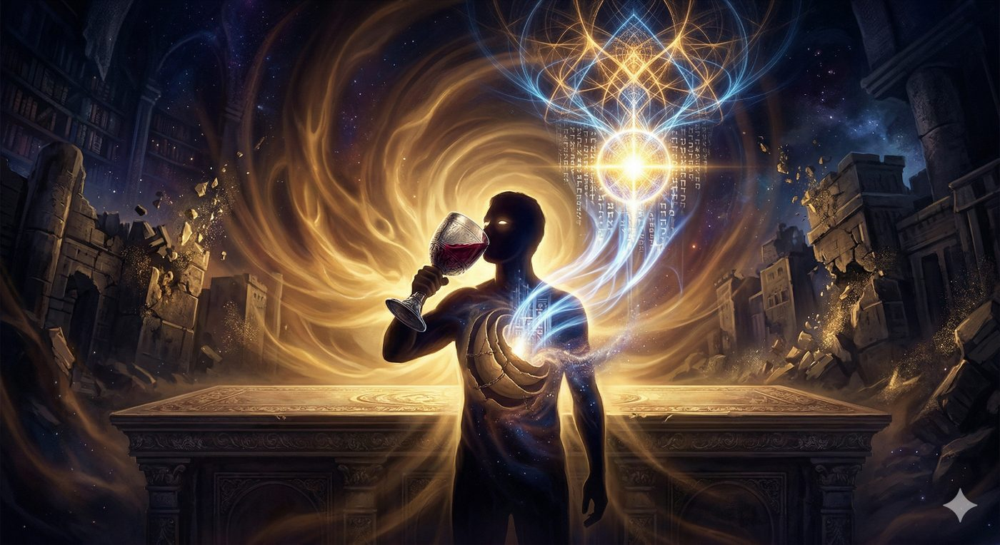
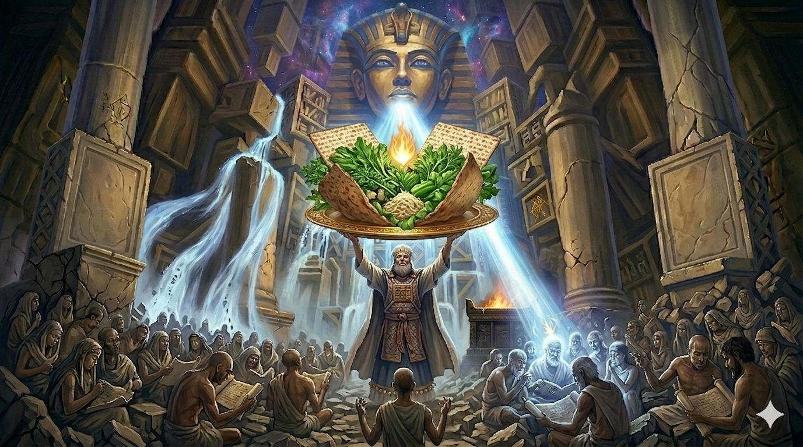
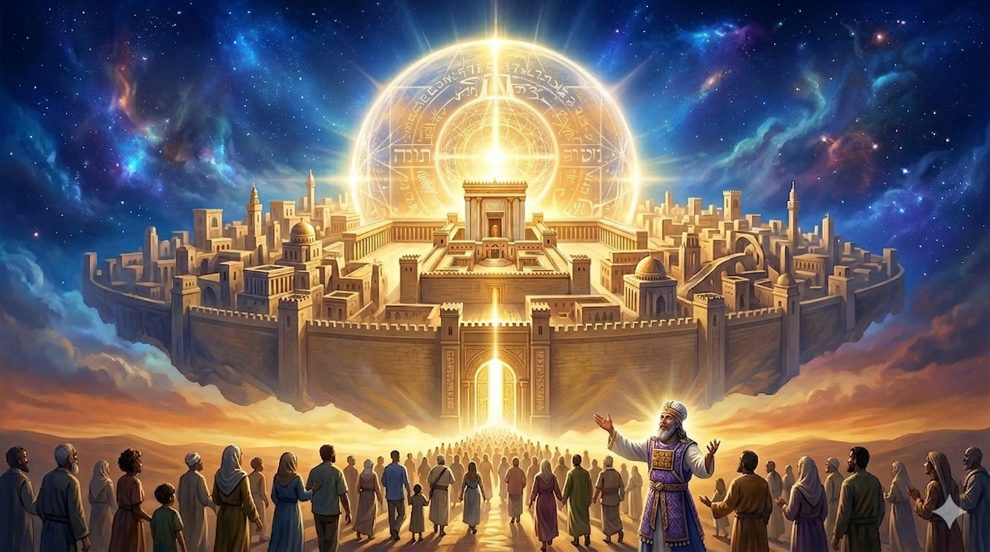

Le Seder, processus de restauration du Daat
L'exil en Égypte, tel qu'il est conçu par la pensée mystique juive et approfondi par les maîtres de la pensée mystique et hassidique, ne représente pas uniquement une servitude physique sous un joug tyrannique mais constitue fondamentalement une crise abyssale de la conscience humaine et une rupture de la connaissance de D.ieu. Ce que les textes nomment le Galout HaDaat (l'exil de la connaissance) qui se définit par l'incapacité de l’Homme à percevoir l'unité sous-jacente de la création.
Dans cet état de fragmentation cognitive et spirituelle, l'humanité est incapable de discerner la providence du Créateur derrière le voile opaque et implacable de la nature et ainsi de reconnaitre que Havayah (le Tétragramme ineffable), le Nom de la miséricorde infinie et de la transcendance absolue, est strictement identique à Elokim, le Nom de la rigueur, du jugement et des lois impitoyables de la nature.
Cette étude souhaite montrer, avec l’aide du Ciel et de nos maîtres, que cet acheminement de la connaissance, partant des "étroitesses" étouffantes de l'Égypte pour aboutir à l'expansion de la conscience, constitue l'objectif central, le fil conducteur et l'architecture invisible de l'intégralité de la nuit du Seder.

Nous verrons que le récit de la Haggada, structuré autour du commandement biblique d'énoncer et de raconter la sortie d'Égypte (Sippur Yetziat Mitzrayim), dépasse de loin la simple réitération mémorielle, le folklore ou le rappel d'un mythe fondateur et qu’il s'agit d'un véritable mécanisme pédagogique, psychologique et théurgique dont l'architecture interne est rigoureusement conçue pour restaurer le Daat au sein des âmes d’Israel.L'analyse linguistique et mystique du terme hébreu pour l'Égypte, Mitzrayim, révèle qu'il est sémantiquement lié aux racines Meitzar (étroitesse, angoisse) et Metzarim (limites, frontières étouffantes). Sur le plan ontologique, cet "endroit étroit" ne désigne pas simplement un territoire géographique, mais symbolise une condition spirituelle où la lumière divine est si violemment contractée par le processus cosmique du Tsimtsoum (la restriction de la lumière infinie) que l'homme perd la capacité intellectuelle de relier l'effet matériel à sa cause transcendante.

Rappelons que le Daat, dans la structure structurelle de l'arbre des émanations divines, est la faculté charnière qui assure la liaison vitale entre les facultés intellectuelles supérieures (Hohmah, l'intuition fulgurante, et Binah, la compréhension analytique et déductive) et les émotions (Middot). En exil, ce pont métaphysique est dramatiquement rompu, plongeant l'individu et la nation entière dans un état de dissonance cognitive où l'intellect ne parvient plus à diriger l'action ni à inspirer le sentiment d'une présence divine.
La stratégie d'asservissement déployée par Pharaon, loin de se limiter à une simple exploitation économique pour la construction de villes et de pyramides, consistait à saturer l'esprit des Hébreux par un labeur incessant. L’objectif du travail forcé était d'empêcher toute pause mentale, toute possibilité de contemplation spirituelle ou de retour sur soi qui aurait pu raviver l'étincelle de la divinité. Le "souffle court" (Kotzer Rouach) dont parle le texte biblique (Chemot 6:9) décrit avec une précision clinique cet état d'oppression psychologique où l'intellect est incapable de se déployer.
Le Rabbi de Sohatchov, dans son œuvre fondamentale Shem MiShmuel, explique que l'esclavage égyptien avait pour but direct de boucher le canal spirituel reliant le Nefesh (l'âme, centre des désirs et des émotions profondes) à l'intellect et aux facultés d'expression. La souffrance physique engendrait un engourdissement total de la sensibilité religieuse. L'intellect humain devenait captif de la répétition mécanique du travail matériel.
Pharaon incarne ainsi le concept même du Peh Rah (la "mauvaise bouche"), celui qui fragmente le langage, corrompt la pensée et empêche activement l'unification des concepts divins. Sous son joug tyrannique, les enfants d'Israël étaient réduits à un état de "fœtus" spirituel.

Le Maharal de Prague, dans son œuvre monumentale Gevurot Hashem, compare en effet la nation en exil à un enfant non encore né, enfermé dans les limites étouffantes de l'utérus égyptien, incapable de vision autonome ou de parole articulée. Dans cet état embryonnaire, la conscience est passive. Elle est incapable de faire la distinction entre les forces aveugles de la nature, qui s'abattent sur elle sans discernement (incarnées par Elokim), et la source suprême de bonté divine providentielle (Havayah). L'exil est dès lors défini comme une obscurité cognitive absolue où la rigueur et le déterminisme matériel semblent être la seule et unique réalité de l'univers.
L'essence même de l'exil, dans l’oeuvre magistrale du Ramhal le Daat Tevunot, réside dans la perception d'une dualité irréductible entre les Noms divins Havayah et Elokim. Le Nom Havayah (le Tétragramme) représente la lumière infinie, la pure miséricorde, et le dépassement miraculeux des lois naturelles. Il symbolise le D.ieu éternel qui transcende le temps (Il était, Il est, Il sera). À l'inverse, Elokim désigne la limitation, la restriction, le jugement strict (Gevoura) et le voilement inhérents et nécessaires à la création et au maintien de l'existence du monde physique. L'enseignement mystique souligne que la valeur numérique (gematria) du Nom Elokim est de 86, ce qui est rigoureusement identique à la valeur numérique du mot hébreu HaTeva (la Nature). Cette équation mathématique et linguistique enseigne que la nature n'est rien d'autre que l'habit, le vêtement ou le "receptacle" de D.ieu lorsqu'Il choisit de dissimuler Sa providence directe.
En Égypte, épicentre de l'idolâtrie antique, ces deux aspects étaient perçus comme irréconciliables, voire en opposition. La nature, incarnée par le cycle immuable du Nil et le pouvoir temporel absolu de Pharaon, était divinisée sous le voile d'Elokim. Pharaon s'arrogeait le pouvoir divin en déclarant être le créateur de son propre fleuve, niant ainsi formellement toute providence supérieure. La présence de Havayah, quant à elle, semblait absente, lointaine ou totalement inaccessible aux esclaves hébreux écrasés par la souffrance.
Le processus rituel, psychologique et intellectuel de la Haggada vise très précisément à déconstruire méticuleusement cette illusion mortifère pour démontrer, étape par étape, que le Nom de la rigueur n'est qu'une modalité d'action, un outil subordonné au Nom de la miséricorde.
Afin de restaurer ce Daat brisé, l'axe central de la nuit de Pessah repose sur le commandement biblique explicite de raconter (Sippour) la sortie d’Égypte. Le Bnei Yissaschar (Rabbi Tzvi Elimelech de Dinov), dans ses discours pour le mois de Nissan, explique que le nom même de la fête, Pessah, doit être lu sur le plan ésotérique comme Peh Sah : "la bouche qui parle". Cette étymologie révèle une dimension infiniment profonde de l'anatomie de l'exil : ce ne sont pas seulement les corps physiques qui étaient enchaînés sous le fouet des gardes-chiourmes égyptiens, mais la faculté même de la parole qui était emprisonnée (Galout HaDibur).
Dans la mystique hassidique, la parole authentique est l'expression directe, le vêtement extérieur du Nefesh (le premier module de l'âme, sa vitalité). En Égypte, l'aliénation et la souffrance indicible avaient tellement fait disparaître la conscience que le canal neuro-spirituel entre l'âme et la bouche était totalement obstrué. Les textes soulignent que les Hébreux pouvaient gémir sous le poids insupportable de la brique et du mortier, mais qu’ils étaient incapables de formuler une prière articulée, de chanter une louange ou de prononcer une parole de vérité. La véritable rédemption doit donc commencer, nécessairement, par le déliement des langues et la guérison du langage. Moché lui-même, en tant que leader incarnant l'état spirituel de sa génération, souffrait d'un défaut d'élocution. Il se décrit comme "lourd de bouche et lourd de langue" (Chemot 4:10), non pas en raison d'un simple défaut physique, mais parce qu'il captait métaphysiquement l'exil de la parole de son peuple.
Le terme Sippour (raconter, narrer l'histoire de la sortie d'Égypte) partage sa racine hébraïque avec le mot Shapir (le saphir, évoquant la brillance lumineuse et la clarté translucide). En racontant les détails de l’exode, les participants à la table du Seder ne se contentent pas de relater des faits historiques du passé, ils "illuminent" littéralement leurs propre conscience présentes. De surcroît, le Targum Onkelos (la traduction araméenne de la Torah) traduit le commandement biblique V'higadeta (et tu raconteras) par "montrer" ou "démontrer". Il ne s'agit pas de lire un mythe fondateur de manière désincarnée, intellectuelle ou distante. Il s'agit d'acter une démonstration performative et théâtrale.
Par la parole libérée (Peh Sah), le Juif fait descendre les concepts abstraits du Daat directement dans la réalité physique et sensorielle du présent, achevant ainsi de transformer la passivité fœtale de l'exilé à celle de l'homme véritablement libre et actif.
Avant même d'entamer le récit formel des miracles, la liturgie de la Haggada s'ouvre sur une déclaration solennelle en araméen : Ha Lachma Anya ("Voici le pain de pauvreté" ou "le pain d'affliction"). L'utilisation de l'araméen, qui était la langue profane et courante des hébreux de l'époque de la compilation de la Haggada dans le Talmud procède d'une volonté d'accessibilité cognitive immédiate. Il s'agit de créer une conscience partagée et d'abolir les barrières élitistes. Pour que le Daat soit véritablement restauré à l'échelle d'une nation, il ne peut demeurer l'apanage exclusif d'une élite intellectuelle ou rabbinique, il doit pénétrer les strates les plus communes, les plus populaires et les plus matérielles de la psyché humaine.
Le Ramhal, dans son œuvre magistrale le Derech Hashem (La Voie de D.ieu), explique que le commandement de consommer de la Matza lors de cette nuit est fondamentalement un acte de purification métaphysique du corps humain. Le pain levé (Hametz) représente le gonflement de l'ego humain, l'arrogance, le désir matériel débridé et l'inclination au mal (Yetzer Hara). Le processus de fermentation dans la pâte est analogue à la corruption des traits de caractère qui obscurcissent l'intellect et empêchent la lumière de D.ieu de pénétrer l'esprit. La Matza, en revanche, parce qu'elle est cuite à la hâte et dépourvue de toute fermentation, est la nourriture de l'humilité. C'est la raison pour laquelle elle est appelée dans la littérature du Zohar le "pain de la foi" (Mikhal d'Meimenuta). En se nourrissant de ce pain, le juif réduit la puissance de son mauvais penchant et prépare son corps physique à devenir un sanctuaire apte à recevoir la révélation de la Torah au Mont Sinaï.
La restauration du Daat ne s'opère pas par une illumination subite, passive ou mystique tombant du ciel, mais nécessite un processus dialectique et éducatif extrêmement rigoureux. Le Maharal de Prague, l'un des plus grands théoriciens de l'exil, souligne avec insistance dans Gevurot Hashem que la structure narrative de la Haggada repose sur le principe talmudique fondamental : "Commencer par le déshonneur (la honte de l'esclavage ou de l'idolâtrie) et terminer par la louange".
La vérité, dans la connaissance juive, ne peut être pleinement intégrée ni comprise si elle ne vient pas combler un vide béant ou résoudre une tension insupportable. C'est là le rôle fondamental de la section du Mah Nishtana (Les Quatre Questions posées traditionnellement par le plus jeune enfant). Contrairement à une idée reçue, ces questions ("Pourquoi cette nuit est-elle différente de toutes les autres nuits?") ne sont pas uniquement de simples dispositifs rhétoriques destinés à maintenir l'attention des jeunes esprits. Elles visent à induire sciemment un état de dissonance cognitive chez l'auditeur, créant une "soif" intellectuelle et un vide qui transforment l'esprit en un réceptacle, prêt à recevoir la compréhension de la liberté.
Le déshonneur par lequel débute le récit du Maggid prend deux formes distinctes, reflétant la dualité profonde de l'exil. Sur le plan purement physique et historique, l'accent est d'abord mis sur l'esclavage ("Nous étions esclaves de Pharaon en Égypte"). Cependant, sur le plan spirituel et théologique, le récit remonte beaucoup plus loin dans le temps : "Au début, nos ancêtres étaient des adorateurs d'idoles" (faisant référence aux ancêtres d'Abraham en Mésopotamie). Cette généalogie démontre que la conscience originelle de l'humanité était totalement fragmentée, brisée et tragiquement séparée de D.ieu.
Le passage graduel et argumenté de cette pénombre vers la déclaration "Maintenant, l'Omniprésent nous a rapprochés de Son service" (qui clôture ce passage) illustre la trajectoire spectaculaire du Daat. À travers cette narration, l'homme réalise rétrospectivement que même ses origines idolâtres, ses errements et ses pires abîmes de souffrance en Égypte faisaient partie inhérente d'un plan majestueux, unifié et dirigé souverainement par Havayah (le nom de D.ieu de la miséricorde qui dirige l’histoire).
Au cœur de cette architecture de restauration du Daat, la Haggada relate l'épisode des cinq Sages réunis à Bnei Brak. Loin d’être une simple anecdote historique, il s’agit d’une démonstration métaphysique que la puissance de la Torah peut déchirer le voile de l'exil.
Alors que ces maîtres sont assis "toute cette nuit-là", plongés dans l'étude de la sortie d'Égypte, ils ne font pas qu'évoquer le passé. Le terme Bnei Brak peut être lu comme Bené Berak (les "fils de l'éclair", Barak signifiant l'éclair en hébreu). Ils incarnent la Hohmah, cette intuition fulgurante qui, telle un éclair dans la nuit la plus noire, vient frapper l'esprit et révéler l'unité divine là où l'œil charnel ne voit que ténèbres.
Cet épisode montre que l'étude de la Torah est l'activateur ultime du Daat. Par la force de leur analyse et de leur ferveur, ces Sages ont acquis un niveau de conscience si intense que les limites temporelles de l'exil se sont évaporées. Ils ont transformé la "nuit" (symbole de la rigueur et du voilement d'Elokim) en une dimension de lumière si pure et tellement forte qu’ils ont réussis (par leur étude) à transformer (comme à l’époque de la sortie d’egypte) en un jour lumineux.
Tellement lumineux, que les élèves semblent avoir été perturbés temporellement, annonçant : "Maîtres, l'heure du Kriat Shema (la lecture du Shema) du matin est arrivée". Rappellons que le Kriat Shema est, par excellence, la proclamation de l'Unification des Noms : « Écoute Israël, Havayah est notre Elokim, Havayah est Un », il doit etre lu une fois la nuit, et une fois le matin jusqu’à une certaine heure pour affirmer que la transcendance (Havayah) et la nature/rigueur (Elokim) fusionnent dans une unité absolue.
Mais ici, les élèves témoignent que l'étude de leurs maîtres a si bien "transpercé" l'obscurité de l'Égypte que la lumière de la Geoula, la Rédemption (le matin dont nous nous reveillerons du cauchemar de l’exil) est déjà devenue une réalité tangible dans leur conscience. Nous enseignant par la même, que pour celui dont le Daat est restauré par l’étude de la Torah, la nuit de l'exil n’est plus obscure, mais devient le réceptacle de l'unification suprême.
La célèbre section de la Haggada détaillant la réaction de quatre enfants différents face à l'histoire de la sortie d'Égypte offre une typologie spirituelle des divers états de conscience humaine. Elle illustre avec brio la manière dont le Daat peut se manifester, ou se fracturer, au sein de l'âme humaine face à la révélation divine. Les maîtres de la Hassidout enseignent en effet qu'il s'agit en réalité des quatre archétypes psychologiques présents simultanément en chaque être humain. L'objectif du travail spirituel de la nuit de Pessah est de s'adresser à chacune de ces facettes intérieures. La guematria (valeur numérique) du mot hébreu Ehad (Un), qui est de 13, multipliée par quatre (le nombre de fils), donne 52, la valeur numérique du mot Ben (Fils). Suggèrant de manière codée que l'objectif ultime de la narration est d'unifier ces quatre types de conscience disparates sous l'égide de l'Unité divine, transformant la multiplicité des attitudes intellectuelles en un seul "fils" dévoué, unifié et totalement aligné sur la volonté de D.ieu.

Au sommet de cette échelle se trouve Le Sage (Haham), dont le Daat est parfaitement intégré. Il perçoit l'Unité absolue entre les Noms divins, comprenant que toutes les lois, qu'elles soient rationnelles, éthiques ou rituelles (Edot, Chukim, Mishpatim), émanent d'une volonté divine unique. L'approche pédagogique de la Haggada à son égard est une instruction profonde et exhaustive, allant jusqu'à lui révéler les mystères ultimes du Seder, comme les lois complexes de l'Afikoman, la connaissance cachée. Par contraste, Le Méchant (Rasha) représente un Daat fracturé et aliéné. Sa perception est celle de la dualité et de la division, considérant le rituel comme un fardeau imposé de l'extérieur. Il s'exclut activement de la providence de Havayah, divisant le monde en "pour vous" et "non pour lui". Pour briser son arrogance, qui constitue une carapace de cynisme, la Haggada préconise une confrontation dialectique, visant à "agacer ses dents" pour permettre à la lumière de pénétrer. Vient ensuite Le Simple (Tam), dont le Daat est embryonnaire et naïf. Il possède une conscience rudimentaire de la force divine brute (Elokim) mais manque du raffinement intellectuel nécessaire pour percevoir l'essence miséricordieuse de Havayah. L'approche à son égard est une réponse directe, claire et fondamentale, exempte d'abstraction philosophique : « D'une main forte, D.ieu nous a fait sortir d'Égypte ». Enfin, Celui qui ne sait pas interroger symbolise l'absence totale de Daat, le silence mortifère de l'exil. Cet état est l'emprise du silence égyptien (Kotzer Rouah), une incapacité à formuler une pensée ou à conceptualiser le divin. Pour cet archétype, l'initiative doit venir du parent : il s'agit d'une initiation active et compatissante, où le parent doit « ouvrir pour lui » la faculté de parole (Peh Sah) afin de forger la cognition.
L'utilisation de trois Matzot et des quatres coupes de vin empilées lors du Seder s'inscrit dans la cartographie mystique précise de l'âme humaine élaborée par le Ari Zal (Rabbi Isaac Luria). Selon cette tradition, les trois Matzot superposées correspondent aux trois facultés intellectuelles supérieures (Mohin) : Hohmah (Sagesse), Binah (Compréhension), et Daat (Connaissance intégrée).

La Matza Supérieure (Hohmah - La Sagesse pure) reste entière durant tout le déroulement du Seder. Elle représente le flash intuitif originel, l'inspiration, la perception pure et non parasitée de l'Unité divine avant qu'elle ne soit fragmentée ou analysée par la logique humaine. C'est la connexion immédiate à l'infini divin. La Matza Médiane (Binah - La Compréhension et l'Analyse) est la Matza spécifique qui est délibérément brisée en deux lors de l'étape ritualisée de Yachatz (la brisure). La Binah est la faculté mentale qui dissèque, analyse, catégorise et descend dans la multiplicité et les limites du monde temporel. Le fait de briser la Matza symbolise le concept mystique de la brisure originelle des receptacles (Shevirat HaKelim) et l'entrée inévitable de l'âme humaine dans un monde de dualité, de souffrance et de réparation. La plus grande partie de cette matza est alors cachée pour devenir l'Afikoman (le dessert final). Cet Afikoman représente l'étincelle divine cachée au cœur même de la matérialité, la connaissance secrète qui ne sera révélée dans toute sa splendeur qu'à la fin des temps, lors de la rédemption messianique ultime. La Matza Inférieure (Daat - La Connaissance intériorisée) sert de base structurelle au plateau. Le Daat est l'élément spirituel qui connecte l'intellect abstrait aux émotions réelles et à la réalité vécue au quotidien. C'est par l'activation du Daat que la théorie devient une conviction existentielle et une boussole morale.
Si la Matza constitue la substance solide de la foi, le "pain de l'humilité" qui purifie le réceptacle du corps, les Quatre Coupes de vin en constituent l'âme liquide, le moteur de l'expansion cognitive. Dans la pensée juive, le vin possède une double polarité : il peut être le poison de l'oubli ou l'élixir de la révélation. Lors de la nuit du Seder, l'injonction de boire ces quatre coupes ne vise nullement à l'obscurcissement des sens, mais bien à une ivresse de la lucidité.
L'enseignement mystique souligne la parenté numérique frappante entre le mot Yayin (le vin) et le mot Sod (le secret), dont la gematria commune est de 70. Boire le vin du Seder, c'est extraire le "secret" de la Création de son écorce matérielle. C'est opérer une percée du Daat à travers les quatre strates de la réalité, correspondant aux quatre expressions bibliques de la délivrance (V'hotzeti, V'hitzalti, V'gaalti, V'lakachti). Chaque coupe agit comme un solvant spirituel, dissolvant une couche d'aliénation égyptienne pour permettre à la conscience de s'élargir.
La Première Coupe (Le Kiddouch) marque la rupture avec le domaine de l'écorce (Klipah). C'est le réveil du Daat qui s'extrait de la masse informe de l'esclavage pour s'isoler dans la sainteté.
La Deuxième Coupe (Le Maggid) est consommée après le récit des miracles pour irriguer l'intellect. Elle est le passage de la connaissance théorique à la reconnaissance émotionnelle : le Daat commence à percevoir Havayah derrière le fracas de l'histoire.
La Troisième Coupe (Le Birkat HaMazone) scelle l'intégration de la lumière divine dans le domaine du terrestre et de la subsistance. Le divin n'est plus une abstraction lointaine, mais la source nourricière de l'existence.
La Quatrième Coupe (Le Hallel) représente l'apothéose du Daat, son union nuptiale avec l'Infini. Ici, l'âme ne se contente plus de comprendre la délivrance, elle la devient.

Ces quatre coupes dessinent ainsi la trajectoire d'une conscience qui, d'abord captive des "étroitesses" du Nil, s'élève par paliers successifs jusqu'à l'océan de la connaissance. Le vin devient alors l'instrument d'une métamorphose: il transforme le sang de la servitude en la sève de la liberté, préparant l'esprit à la vision prophétique finale de la Geoula, la cinquième coupe d’Eliahou Hanavi.
Le passage en revue des Dix Plaies d'Égypte au cours de la soirée n'est en aucun cas un exercice de triomphalisme vindicatif ou une célébration de la souffrance des ennemis. Dans le cadre de la restauration globale du Daat, la séquence des plaies constitue une véritable méthode de connaissance divine appliquée. Le Créateur n'avait pas seulement pour but de punir la tyrannie de l'empire égyptien, mais d'éduquer de manière indélébile le monde entier sur la nature véritable de la réalité. Le texte biblique martèle d'ailleurs cet objectif éducatif de manière explicite : "Afin que tu saches que Je suis Havayah" (Chemot 8:18).
Chaque plaie a été conçue pour cibler, humilier et déconstruire systématiquement l'illusion d'un pouvoir autonome résidant au sein de la nature (Elokim) ou des divinités païennes qui en étaient les allégories. En frappant le Nil, qui était la source absolue de l'économie égyptienne et l'incarnation de leur panthéon, en obscurcissant le D.ieu soleil (Ra), ou en violant les lois fondamentales de la physique (comme le miracle de faire coexister le feu ardent et la glace au sein de la même entité lors de la plaie de la grêle), le Créateur a démontré de manière empirique et irréfutable que les forces d'Elokim (la nature, dont la valeur numérique est de 86 comme celle d’Elokim) sont les sujets absolus et malléables de Havayah (la transcendance infinie).
Le Seder insiste dans sa liturgie : la Geoula n'a pas été accomplie par un ange, ni par un séraphin (un ange tutélaire), ni par l'intermédiaire d'un quelconque émissaire céleste, mais par le Saint, Béni soit-Il, Lui-même, intervenant dans l'immédiateté de Son essence. Cette manifestation cosmique non filtrée était indispensable. Face à l'ego démesuré de Pharaon, qui représentait la cristallisation absolue de l'orgueil matériel et de l'aveuglement spirituel, allant jusqu’à se considérer comme un d.ieu, seule la pénétration directe du Nom Havayah pouvait percer l'écorce du mensonge cosmique et délivrer la conscience humaine captive.
Une fois l'illusion de la puissance égyptienne et de la primauté de la nature définitivement déconstruite, l'âme doit être reconstruite, stabilisée et élevée étape par étape. Ce lent processus d'édification est encapsulé de manière magistrale dans le célèbre poème liturgique Dayenu ("Cela nous aurait suffi"). Ce chant de louange ne doit surtout pas être compris de manière littérale ; car, logiquement, si D.ieu avait sorti le peuple d'Égypte sans le mener au mont Sinaï pour lui donner la Torah, cela n'aurait évidemment pas suffi à accomplir le dessein divin de la création. Il s'agit plutôt de la re-connaissance émerveillée d'un processus évolutif de la grâce divine, où chaque étape détient en elle-même une valeur absolue de révélation et mérite une gratitude infinie.
Le texte de Dayenu se compose très exactement de quinze niveaux distincts de bonté divine (les Maalot Tovot), formant une échelle qui va de la simple libération de l'oppression physique ("S'Il nous avait fait sortir d'Égypte") jusqu'à l'apothéose ("S'Il avait construit pour nous le Temple"). Le nombre quinze n'est pas arbitraire et est porteur de secrets immenses dans la tradition juive. Comme le souligne le Gaon de Vilna dans son commentaire profond sur la Haggada, ces quinze degrés temporels et historiques chantés lors du Seder sont le miroir spirituel exact des quinze marches du Temple de Jérusalem. C'est sur ces marches que les Lévites se tenaient jadis pour chanter les quinze Cantiques des Degrés (Shir HaMaalot correspondant aux Psaumes 120 à 134) lors des festivités religieuses.
De surcroît, le nombre quinze correspond mystiquement à la valeur numérique des deux premières lettres du Tétragramme : Yud (10) et Heh (5). Par la récitation chantée du Dayenu, le participant s'engage consciemment dans une ascension émotionnelle et spirituelle. Chaque strophe est une marche gravie depuis l'impureté de l'exil, édifiant patiemment un "Temple" intérieur où les lettres fragmentées du Nom divin peuvent de nouveau résider en harmonie et en unité.
Remarquons que le poème se déploie en trois phases de conscience distinctes:
Les cinq premiers niveaux représentent la Libération Physique et Matérielle, par la sortie d'Égypte, les jugements des idoles égyptiennes et le dépouillement des richesses de l'empire. Ces étapes représentent le démantèlement absolu de l'impureté (Klipah) et l'annulation de l'emprise des forces du mal sur l'âme, condition sine qua non à toute élévation.
Les cinq niveaux suivants présentent les Miracles Transitoires de Providence. L'ouverture de la Mer Rouge, le don de la Manne et la subsistance miraculeuse durant la traversée du Désert. Cette phase est la révélation éclatante de l'attribut de Havayah (la miséricorde divine) intervenant directement au-dessus des lois déterministes de la nature (Elokim).
Les cinq derniers édifient de manière pérenne cette révelation Spirituelle par l'institution du Shabbat, la Révélation au Sinaï, le don de la Torah, l'entrée en Terre d'Israël et la construction du Temple. Elles achèvent la reconstruction totale du Daat (la Connaissance intégrée), sanctifiant l'espace intérieur et reconnectant l'âme à l'Essence divine absolue.
Alors que la révélation des miracles pourrait inciter le participant à rejeter totalement le monde matériel et la dimension de la rigueur pour ne se délecter que de la transcendance pure, le Seder impose une étape de synthèse. L'un des moments les plus paradoxaux et les plus denses métaphysiquement du Seder est l'observance du Korekh, le fameux sandwich institué par le grand sage Hillel l'Ancien à l'époque fastueuse du Second Temple. Hillel avait pour coutume immuable de prendre ensemble un morceau de l'agneau pascal (symbole de l'offrande à D.ieu), de la Matza (le pain de la liberté) et du Maror (les herbes atrocement amères), et de les consommer simultanément en une seule bouchée.
Aujourd'hui, en l'absence tragique du sacrifice pascal lié à la destruction du Temple, le rituel conservé consiste à envelopper minutieusement le Maror dans deux morceaux de Matza. La Matza, comme nous l'avons analysé selon l'enseignement du Ramhal, représente la libération, la miséricorde (hessed), la foi pure et l'intervention miraculeuse de Havayah. Le Maror, avec son goût piquant et repoussant, incarne physiquement l'amertume effroyable de l'esclavage, l'obscurité terrifiante du monde physique en exil et l'attribut divin de stricte justice (Elokim / Gevourah).
Envelopper le Maror dans la Matza est dès lors un acte spirituel majeur de réparation de l'esprit. Il ne s'agit pas de nier naïvement la souffrance du monde ou d'effacer la rigueur indéniable de l'existence humaine, mais de la circonscrire et de lui donner un sens. Le Daat mature, celui du Sage Hillel qui a compris la dialectique de l'exil, réalise que la souffrance, les drames historiques et la matérialité rugueuse (le Maror) sont en réalité contenus, définis, enveloppés et sanctifiés par le cadre infiniment plus vaste de la grâce et de l'unité divine (la Matza).

C'est la réalisation existentielle vertigineuse que le célèbre adage talmudique, Hakol léTova, "Tout (ce que fait le Miséricordieux) est pour le bien", est une loi perpetuelle. La rigueur d'Elokim est ainsi "adoucie" (un concept fondamental appelé Hamtakat HaDinim en mystique) à sa racine même par son intégration au sein de la bonté infinie de Havayah. Les opposés conceptuels ne s'annulent pas dans le néant, mais s'unifient par l’expérience humaine, au service d'un dessein global d'élévation de l'âme. L'amertume brutale de l'histoire humaine est alors intégrée dans l'espérance messianique, démontrant que les moments les plus sombres de la trajectoire juive étaient la condition sine qua non des plus grandes révélations spirituelles et de son apothèose que nous allons décrire ci-dessous.
Au terme de ce long voyage pédagogique et gustatif, la trajectoire du Seder culmine dans l'explosion de joie exubérante du Hallel (la récitation chantée de psaumes de louanges extatiques) et s'achève solennellement par l'étape finale nommée Nirtzah (l'acceptation).
Le terme hébreu Nirtzah possède des résonances prophétiques immenses. Il fait directement écho au livre du prophète Isaïe (40:2), où ce dernier annonce avec ferveur à son peuple que la faute de Jérusalem est enfin "expiée" ou "acceptée" (Nirtzah), marquant ainsi la fin inéluctable de la souffrance des longs siècles de l'exil. À ce stade final et silencieux de la nuit, nous avons ainsi métaphoriquement et spirituellement, gravi l'ensemble des mondes métaphysiques de la création. La dualité écrasante et désespérante qui régnait en Exil a été dissoute par la lumière éclatante de l'intellect restauré par les rituels du récit, du vin, de la matza et du maror.
Dans l'architecture sophistiquée de l'âme humaine élaborée par la mystique et reprise avec ferveur par le Baal Shem Tov, le Seder permet à l'individu de transcender les niveaux inférieurs de son âme (Nefesh, le souffle de vie ; Rouah, l'esprit émotionnel ; Neshamah, l'intellect cognitif) pour atteindre et toucher aux dimensions transcendantes de Haya (la force de vie cosmique supérieure) et de Yehida (l'essence de l'âme, l'unité singulière, inextinguible et éternelle avec le Divin). Ces deux niveaux supérieurs de l'âme, inatteignables (en général) en temps d'exil, correspondent directement aux dimensions les plus élevées et les plus inaccessibles du Nom Havayah. Parvenir à Nirtzah, c'est donc toucher à la cime de sa propre existence spirituelle, un instant d'harmonie absolue où le fardeau de la temporalité s'efface.
Le Sfat Emet (Rabbi Yehudah Aryeh Leib Alter de Ger), dans ses discours d'une immense profondeur sur la fête, enseigne que chaque être humain possède en lui une Nekudah Pnimit (un point intérieur sacré). Ce point est l'étincelle même de la présence de D.ieu au sein de la psyché humaine, l'épicentre inaltérable de la sainteté. Tout le travail rituel du Seder, allant du nettoyage maniaque du Hametz (les scories de l'ego) à l'ingestion de la Matza (la connaissance), vise à déblayer les couches extérieures d'impureté et d'artifice pour révéler cette Nekudah Pnimit. Une fois cette étincelle dévoilée lors du Nirtzah, le juif ne ressent plus le poids du monde matériel comme une oppression, mais comme le théâtre même de la gloire divine.
C'est ici, au milieu de la nuit de Pessah, que l'objectif déclaré par le Ramhal dans Daat Tevunot est pleinement, majestueusement atteint : la connaissance intériorisée que Havaya Hou HaElokim (L'Éternel de miséricorde est le D.ieu de justice). Dans cette lucidité nocturne, il n'y a plus aucune dichotomie entre le miracle surnaturel et la loi naturelle. Le juif comprend enfin que l'exil égyptien, avec toutes ses atrocités indicibles, ses travaux forcés et ses étroitesses, n'était qu'un catalyseur ténébreux indispensable, le creuset nécessaire à la manifestation d'une lumière d'une intensité infiniment plus radieuse lors de la sortie d'Égypte. Le voile d'Elokim a été rituellement retiré par le Seder pour révéler avec éclat que la Nature n'est que le vêtement le plus sophistiqué, le plus constant et le plus discret du Miracle de Havayah.
Le rituel de la Haggada de Pessah se dévoile ainsi, au terme de cette analyse, comme bien plus qu'une cérémonie de remémoration familiale. Il s'agit d'un véritable traité d'ingénierie spirituelle et de guérison de la connaissance d'une profondeur inouie. Le Seder prend le participant à son point d'origine métaphysique : empêtré dans le Galut HaDaat (l'exil de l'intellect), là où l'esprit est étouffé, mutilé par le matérialisme oppressant de la société humaine, asservi par l'angoisse de la survie physique, et réduit au silence par l'incapacité linguistique à nommer le divin (Galut HaDibur). À travers un processus dialectique extraordinairement minutieux, passant par l'éveil aigu du questionnement intellectuel (Mah Nishtana), l'analyse compatissante mais ferme des archétypes psychologiques (les Quatre Fils), la déconstruction théologique et historique des idoles de la nature (les Dix Plaies), et l'intégration courageuse de la souffrance de l'histoire dans le grand plan d'amour divin (Korekh); la liturgie du Seder répare brique par brique, et développe le Daat humain. La clôture du Seder par la déclaration du Nirtzah n'est donc pas uniquement la déclaration d'un devoir religieux accompli. Comme le font remarquer avec acuité les maîtres hassidiques, le rituel officiel se termine peut-être, mais son effet ontologique sur la structure de l'âme humaine est permanent. En se levant de la table du Seder au milieu de la nuit, l'individu ne sort pas simplement du périmètre d'un rituel traditionnel. Il sort littéralement, métaphysiquement, de sa propre Égypte intérieure. Il s'avance dans le temps historique et dans les défis du quotidien, non plus comme un sujet passif terrifié par le hasard de la nature, mais armé d'une conscience réunifiée. Il est désormais capable de percevoir la Présence divine non seulement lors des ouvertures grandioses et spectaculaires de la mer, mais dans le tissu même des lois inexorables de la physique et des vicissitudes de l'histoire humaine. La dualité est morte et laisse place à un Daat ressucité. Le Nom implacable de la rigueur et le Nom de la miséricorde salvatrice ne font désormais qu'Un, pavant avec assurance la voie vers la montagne du Sinaï pour la réception de la Torah, et illuminant le chemin de l'humanité vers l'horizon de la Geoula finale.

Le célèbre chant final, "L'an prochain à Jérusalem" entonné avec ferveur en pleine nuit, n'est pas qu'un simple vœu géographique de retour en terre de Sion. Jérusalem, dont le nom est lu en hébreu par nos sages comme Yir'ah Shalem (la crainte parfaite ou la vision d'harmonie absolue), symbolise le point focal de cet état de conscience unifié suprême où le Ciel et la Terre se rejoignent.
Yehi Ratson, puisse être la Volonté du ciel, Que nous puissions réaliser ce Seder de Pessah comme une véritable restauration de notre conscience. Que la lumière de la Matza brise l'écorce de notre ego et que le passage au Peh Sah libère notre parole de l'exil, nous rendant capables de prier et de témoigner de Ta présence.
L'shana Habaa B'Yerushalayim
Pessah Cacher VéSameah !
Rédigé par B.A le 11 Nissan 5786 à Saint Mandé
La Crise du Daat : L'exil n'est pas qu'une servitude physique, c'est une fragmentation cognitive (Galout HaDaat).
Le Voile de la Nature : L'incapacité à voir que Havayah (Miséricorde) et Elokim (Lois de la Nature/Rigueur) sont une seule et même essence.
L'Objectif du Séder : Un mécanisme théurgique et pédagogique pour restaurer ce pont brisé entre l'intellect et l'émotion.
La Psychologie de Pharaon : Sifflement du souffle (Kotzer Rouach) et saturation par le labeur pour empêcher la contemplation.
Pharaon, le Peh Rah : La "mauvaise bouche" qui fragmente le langage et emprisonne la parole (Galout HaDibur).
L'État Embryonnaire : Selon le Maharal, une nation "non-née", passive et incapable de distinction théologique.
L’Étymologie de Pessah : "La bouche qui parle". La libération commence par le déliement de la langue.
Sippour et Shapir : Raconter n'est pas se souvenir, c'est illuminer (Saphir) la conscience présente.
Le Rôle de Moché : Le leader "lourd de bouche" qui guérit le langage de son peuple.
Ni Levain, Ni Miel : Purification des motivations. L'orgueil (levain) et la volupté (miel) sont exclus de l'Autel.
La Matza, Pain de la Foi : L'ingestion de l'humilité pour aseptiser le corps métaphysique.
Le Paradoxe de Chavouot : Pourquoi le Hametz (levain), interdit à Pessah, devient l'offrande centrale (Shtei HaLechem) une fois le Daat rectifié.
Le Moteur du Mah Nishtana : Créer une dissonance cognitive, un vide (Rek) nécessaire pour recevoir la lumière.
Les Quatre Fils : Typologie des états du Daat (Intégré, Fracturé, Embryonnaire, Absent).
L'Éclair de Bnei Brak : L'étude de la Torah comme force fulgurante (Hohmah) qui transperce la nuit de l'exil.
L’Échelle de Dayenu : Les 15 degrés d'ascension pour reconstruire le Temple intérieur.
Le Sandwich de Hillel : Envelopper le Maror (souffrance/Elokim) dans la Matza (grâce/Havayah).
Hamtakat HaDinim : L'adoucissement des rigueurs par leur intégration dans un dessein global.
Conclusion : Nirtzah et la Vision Finale
La Nekudah Pnimit : Révélation de l'étincelle divine inaltérable après le retrait des scories de l'ego.
Havayah Hou HaElokim : La réalisation finale que la Nature est le vêtement du Miracle.
L'An Prochain à Jérusalem : L'atteinte de la Yir'ah Shalem (Vision d'Harmonie Absolue).